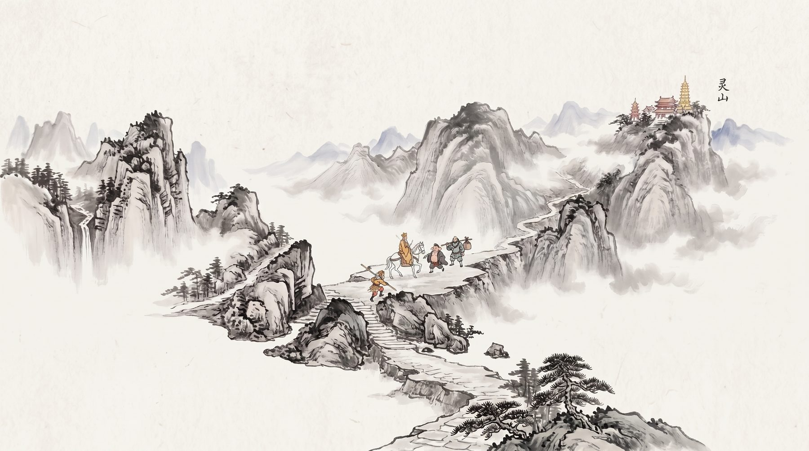
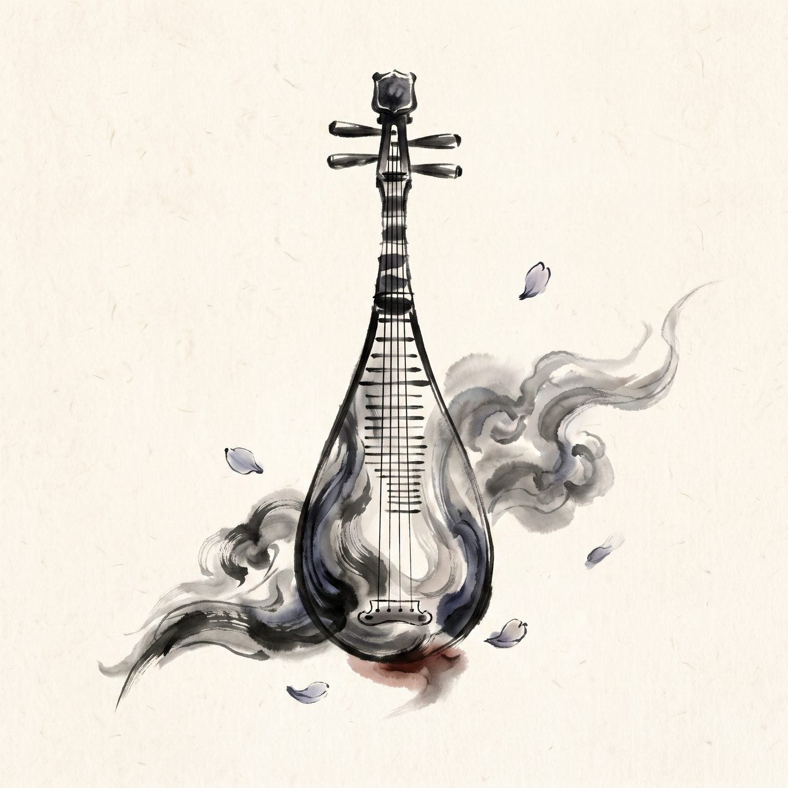
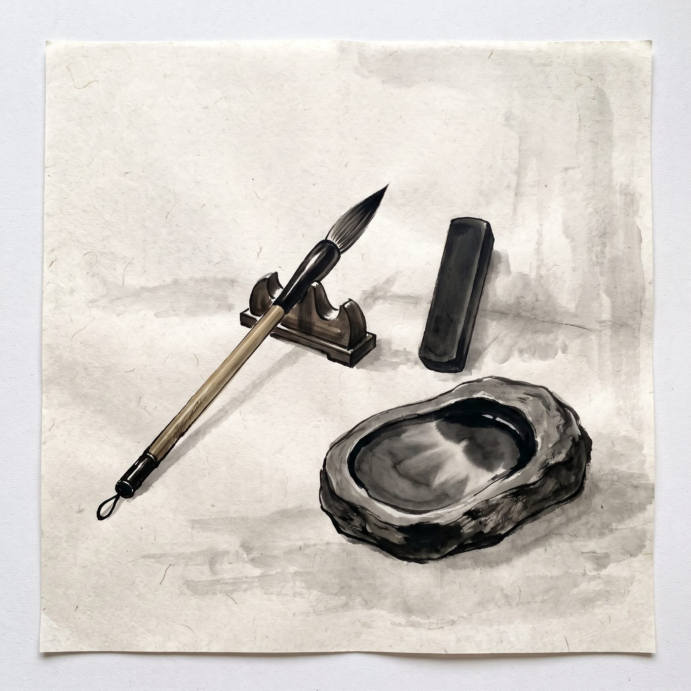
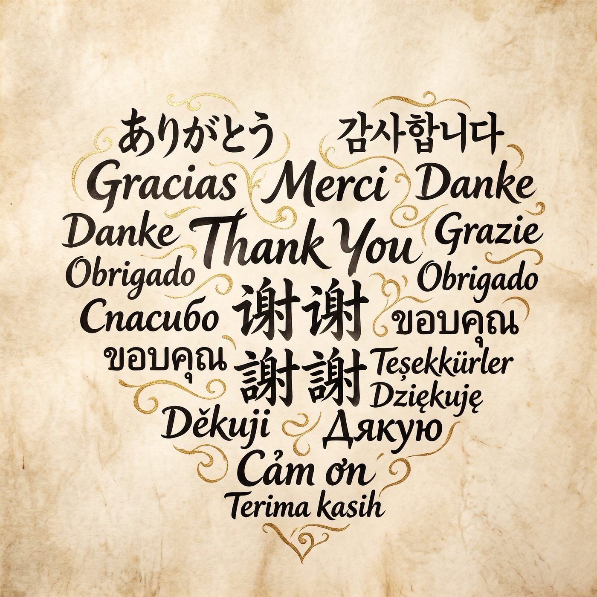

八位取经行者，各显神通
点击下方棋子，查看各行者的专属水墨立绘与绝技神通。
 孙悟空
孙悟空
 猪八戒
猪八戒
 沙僧
沙僧
 唐僧
唐僧
 白龙马
白龙马
 吴承恩
吴承恩
 土地公
土地公
 巡山小妖
巡山小妖


一眼看破妖法，金箍棒横扫千军。自带对妖王战力加成，被直接攻击时强力还击，是西行路上一往无前的开路先锋。
【被动】大圣神威
齐天大圣神威：妖王对决骰点 +1，破关后再多走 3 格。威震群妖：喽啰不敢照面——望风而散，连判定都免了。一棒还击：谁的妖术打中他，谁倒退 2 格。精怪也怵他三分：判定为他放宽 1 档。
西行通鉴 · 玩法与模式
从纯粹的竞速掷骰到 19 旋钮的深度自定，每一次西行都有截然不同的博弈风味。
🎲 见好就收，险中求胜
每回合前进后触发冲刺抉择：冲过安全点额外步数助你一飞冲天；冲砸了承受路途惩罚。终点前的最后冲刺，正是落后者的绝地反击机会！
👹 十大妖王拦路，各怀绝技
三道险关守关妖王随机降临！有的逼你掷小，有的只认中庸，有的平局占优。白骨精更会连变两重化身——输了？那就重整旗鼓再走一趟！
🌏 天涯若比邻，同桌各读母语
全面支持 18 种语言同桌畅玩！一键快速匹配全球玩家，或三两好友围坐一台电脑轮流掷骰，随时随地 1~8 人轻松开局，每个人读到的都是自己的母语。
⚙️ 十九个旋钮，打造专属房规
经典竞速、冲刺博弈、气势滚雪球、蓄气腾云，更有 19 个深度旋钮的自定义模式，内置地狱西行、闪电局、抽一签等现成风味！




一张一块钱的西游纸棋
小时候，我在小卖部花一块钱买到一张西游棋：一张纸棋盘、四个棋子、一颗骰子。然后找上一到三个小伙伴，围坐在一起，从第1格一路掷骰跑到第100格。那张棋盘后来遗失了，但大家围桌时的紧张、欢呼和笑声一直留在我的记忆里。
我的妻子学习琵琶已经两年，而我一直很爱玩游戏。有一天，我突然想起了那张西游纸棋，于是把它当作业余爱好，重新做成了游戏：除了上班和睡觉，几乎所有时间都花在了它身上，乐此不疲。游戏里的琵琶都由她亲自演奏录制。现代版琴瑟和鸣：他写游戏，她弹琵琶。